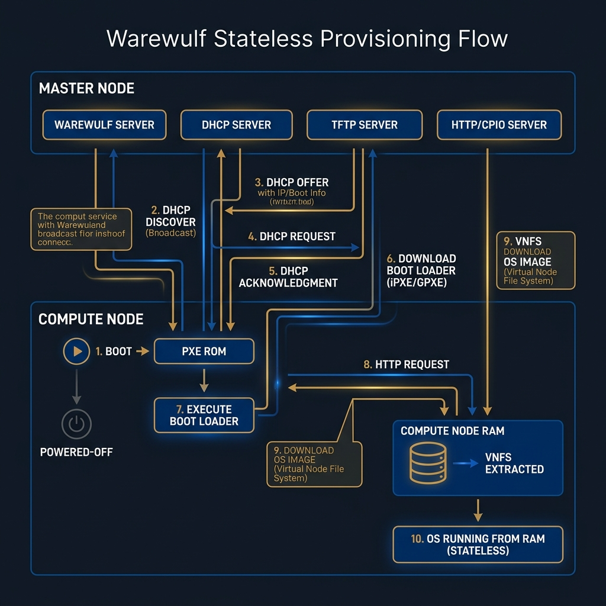

Node Provisioning Strategies & Microarchitecture
Vagrant Virtualization Mechanics, Warewulf 4 OCI Bare-Metal Protocols & Decision Engineering (Ch. 4 & 5)- Deconstruct the architectural mechanics of Vagrant box packaging, VirtualBox provider drivers, host-only networking, and guest communicators.
- Analyze Warewulf 4's transition from legacy VNFS tarballs to OCI-standard container images, initramfs overlay injection, and live runtime synchronization.
- Critique the 5-stage network boot protocol stack (IPMI -> DHCP -> TFTP -> HTTP -> Kernel Exec) powering bare-metal supercomputing clusters.
- Formulate an enterprise infrastructure selection matrix comparing virtualized desktop orchestration against physical stateless bare-metal provisioning.
1. Fundamentals of Node Provisioning in High Performance Computing
1.1 What is Node Provisioning?
In High Performance Computing (HPC) and distributed system architecture, Node Provisioning is the automated pipeline responsible for initializing raw compute capacity (whether physical bare-metal hardware, virtual machines, or cloud instances), instantiating operating system kernels, installing device drivers and math libraries, binding network interfaces, and bringing the node into an active state ready to execute parallel jobs.
1.2 The Scalability & Consistency Challenge
Managing a cluster introduces a severe administrative scaling bottleneck. Manually installing an operating system on a single server using interactive USB installers takes approximately 30 minutes. Provisioning a 500-node cluster manually would require over 250 hours of tedious work, making data center deployment impossible.
Furthermore, HPC parallel applications demand strict Bit-for-Bit Consistency. In an MPI application executing across 1,000 cores, if a single node possesses a slightly different minor version of an OpenMP runtime or linear algebra library (e.g. libopenblas.so.0.3.20 versus libopenblas.so.0.3.21), the simulation will experience subtle floating-point drift, produce non-reproducible scientific results, or crash with segmentation faults. Automated provisioning ensures every node boots a mathematically identical operating system environment.
1.3 Declarative Infrastructure as Code (IaC)
Modern infrastructure management uses Infrastructure as Code (IaC)—defining cluster topologies using version-controlled text configuration files. IaC is declarative: the systems engineer defines the desired target state of the infrastructure (e.g., "5 nodes running Rocky Linux 9.6 with 2GB RAM on private IP subnet 192.168.56.0/24"), and the provisioning orchestrator automatically executes the API commands required to enforce that exact state.
2. Vagrant & Virtualization Inner Workings (Lab 1 Practical Approach)
2.1 High-Level Orchestration Architecture
Vagrant is an open-source orchestration tool designed by HashiCorp that acts as an abstraction wrapper on top of underlying virtualization providers (such as Oracle VM VirtualBox, KVM/QEMU, Hyper-V, or VMware). Rather than managing virtual machines manually through hypervisor graphical user interfaces, Vagrant exposes a unified Command Line Interface (CLI) and a declarative Ruby-based configuration file named Vagrantfile.
2.2 Box Packaging & Image Mechanics
At the core of Vagrant's fast deployment speed is the Vagrant Box framework. A box is a compressed gzipped tarball (.box extension) containing three critical elements:
- Virtual Disk Image: The pre-installed operating system disk (e.g.
box-disk1.vmdkorbox-disk1.vdicontaining a clean Rocky Linux 9.6 installation). - Provider Metadata (
metadata.json): Specifies the compatible hypervisor driver (e.g.{"provider": "virtualbox"}). - Vagrantfile Defaults: Sets base RAM, CPU, and default guest credentials (`vagrant` user with passwordless `sudo` and standard insecure SSH keypair).
When a developer executes vagrant up for the first time, Vagrant downloads the requested box archive (such as `bento/rockylinux-9.6`) from the Vagrant Cloud registry into a global cache directory on the host (`~/.vagrant.d/boxes/`). For every virtual node instantiated, VirtualBox creates a high-speed Copy-on-Write linked clone referencing the cached base image, allowing 5 virtual machines to spin up in under 60 seconds without duplicating gigabytes of disk storage.
2.3 Virtual Network Drivers & Interconnect Emulation
To simulate multi-node HPC cluster networking on a single physical laptop (as performed in Lab 1 Workbook), Vagrant coordinates VirtualBox virtual network adapters across three distinct driver modes:
The first adapter is configured as a NAT Network Adapter (eth0), which Vagrant attaches automatically to the primary VirtualBox NIC. This interface translates guest IP requests to the host machine's outbound internet connection, enabling software package installations via package managers like dnf while establishing SSH port forwarding (mapping host 127.0.0.1:2222 to guest port 22).
The second adapter is configured as a Host-Only Private Network (eth1). This creates an isolated virtual switch (such as vboxnet0) linking only the host workstation and guest virtual machines on static IP addresses within the 192.168.56.0/24 subnet. This arrangement emulates the internal compute network of an HPC cluster without exposing cluster traffic to public local area networks.
In scenarios requiring external network access, Vagrant can also configure a Bridged Public Network. This binds the virtual network interface directly to the host machine's physical Ethernet card, allowing external servers on the physical network to interact with the virtual machine as an independent network host.
2.4 Provisioning Pipeline & Guest Communicators
When executing vagrant up, Vagrant passes through a rigid 6-stage microarchitectural initialization pipeline:
[1. State Check] ----> [2. VM Import & Linked Clone] ----> [3. Hardware Tuning (RAM/CPUs)]
|
[6. Shell Provisioning] <---- [5. SSH Communicator Connect] <---- [4. Virtual Network Binding]Once hardware is instantiated, Vagrant uses its internal SSH Guest Communicator to establish an encrypted tunnel into the guest kernel. It replaces the default insecure SSH key with a newly generated random SSH keypair, mounts host-shared folders via VirtualBox Guest Additions, and executes the inline shell provisioner (or Ansible playbook) to set hostnames, populate /etc/hosts, and configure cluster authentication keys.
3. Enterprise Bare-Metal & Stateless Provisioning with Warewulf 4
3.1 Bare-Metal Performance & Hypervisor Overhead
While local virtualization with Vagrant and VirtualBox is ideal for development and educational labs, running production supercomputers inside virtual machines introduces a 3% to 8% CPU virtualization overhead and severe network I/O latency penalties. Physical supercomputers require Bare-Metal Performance—executing directly on bare silicon hardware without hypervisor abstraction layers.
3.2 Architectural Evolution: Warewulf 3 (VNFS) vs Warewulf 4 (Go & OCI Containers)
Warewulf is the standard open-source bare-metal provisioning framework for HPC clusters. Understanding Warewulf 4 requires examining its technological evolution from legacy architectures.
Legacy Warewulf 3 relied on Perl scripts to generate custom Virtual Node File System (VNFS) compressed tarballs from local chroots using the wwvnfs utility. While functional, VNFS archives were complex to maintain, difficult to version-control, and dependent on proprietary image formats.
Warewulf 4 represents a complete rewrite in Go, replacing legacy VNFS tarballs with Open Container Initiative (OCI) Containers compatible with Docker and Apptainer. Operating system images for compute nodes are defined using standard Dockerfiles (such as FROM rockylinux:9 followed by RUN dnf install -y openmpi slurm-slurmd) and pulled directly from public or private container registries.
3.3 Complete Network Boot Protocol Stack
Warewulf 4 provisions hundreds of diskless physical compute nodes simultaneously over the network using a 5-stage protocol stack:

Figure 3.1: The Warewulf 4 Stateless Bare-Metal Provisioning Boot Sequence.
- IPMI Remote Power Management: Warewulf issues power commands (`wwctl power on node[01-99]`). The master node connects over the out-of-band management network to each server's Baseboard Management Controller (BMC) using the Intelligent Platform Management Interface (IPMI) protocol or Redfish API, triggering hardware power-on.
- DHCP Network Discovery (`dnsmasq`): The physical network interface (NIC) initiates a Preboot Execution Environment (PXE) broadcast. Warewulf's integrated `dnsmasq` service matches the node's MAC address, assigns its static IP address, and returns the network path of the stage-1 bootloader binary (`ipxe.efi`).
- TFTP Bootloader Transfer: The compute node uses Trivial File Transfer Protocol (TFTP) to fetch `ipxe.efi` into RAM, initializing advanced network stack capabilities (such as HTTP downloading and VLAN tagging).
- HTTP OCI Container Image Download: The node issues high-speed HTTP GET requests to Warewulf's internal web server to download the compressed Linux kernel (`vmlinuz`) and container root filesystem image (`rootfs.img`) into RAM memory at multi-gigabit speeds (bypassing slow TFTP file transfer bottlenecks).
- Overlay Injection & Kernel Execution: Warewulf injects specialized node configuration overlays into the initial RAM disk (initramfs). The node unpacks the container image into RAM, executes `init`, and boots into a pristine, fully operational Linux state.
3.4 The Warewulf 4 Object Model & Dynamic Overlays
Warewulf 4 manages infrastructure declaratively through the `wwctl` command-line utility, organizing cluster state into three core object types:
Nodes: Physical server definitions mapping MAC addresses, static IPs, hostnames, and IPMI parameters (e.g. wwctl node add node01 --mac 52:54:00:12:34:56 --ip 192.168.56.11 --ipmi-ip 10.0.0.11).
Profiles: Group templates (e.g., `default`, `gpu-nodes`) establishing shared container images, kernel arguments, and network netmasks. Nodes inherit profile configurations automatically, allowing an administrator to update 500 nodes by modifying a single profile.
Overlays (System vs Runtime Overlays): To keep generic container images clean, Warewulf uses Template Overlays (Jinja2 rendered files):
- System Overlays: Injected into the initial RAM disk (initramfs) before kernel execution. Used for fundamental boot files (e.g.,
/etc/fstab,/etc/network/interfaces, kernel module parameters). - Runtime Overlays: Dynamically synced to live, running compute nodes in real time by the background
wwclientdaemon (e.g., updating/etc/slurm/slurm.conf, user SSH keys, or/etc/passwdwithout requiring a node reboot).
4. Provisioning Strategy Selection & Decision Engineering
4.1 Comparative Architectural Matrix
Selecting the optimal provisioning strategy requires evaluating workload performance requirements, hardware availability, deployment scale, and administrative complexity.
| Provisioning Strategy | Primary Target Environment | Key Architectural Advantages | Technical Limitations & Trade-Offs |
|---|---|---|---|
| Vagrant + VirtualBox (Lab 1) | Local developer laptops, student labs, CI/CD automated test pipelines. | Zero physical hardware cost; rapid `vagrant up` / `destroy` cycle; portable single-file `Vagrantfile` IaC. | Hypervisor CPU/RAM overhead (3–8%); limited by workstation RAM capacity; unsuitable for multi-node MPI performance benchmarks. |
| Warewulf 4 (Stateless Bare-Metal) | Production supercomputers, research clusters (100–10,000 physical servers). | 100% bare-metal speed (zero hypervisor loss); zero disk I/O latency; 100% immutable reboot resilience; modern OCI container images. | Requires physical server hardware, dedicated network switches, DHCP/PXE infrastructure, and out-of-band IPMI setup. |
| Stateful Disk Imaging (Clonezilla) | Static desktop computer labs, traditional IT server rooms. | Simple initial setup; persistent disk storage retains state across reboots. | Slow disk write times; high maintenance overhead; severe configuration drift over time across compute nodes. |
4.2 Decision Framework: When to Use Which Strategy?
Use Vagrant & VirtualBox during initial software prototyping, development of Slurm configuration scripts, and academic practical assignments (as performed in Lab 1). Use Warewulf 4 when deploying physical enterprise server racks in a data center to run compute-bound parallel MPI scientific simulations where bare-metal CPU performance and sub-microsecond InfiniBand network speeds are mandatory.
5. Summary & Self-Assessment
Node provisioning forms the foundation of modern high-performance computing infrastructure. This week, we explored the microarchitectural inner workings of local virtualized provisioning using Vagrant IaC (Lab 1) and enterprise bare-metal stateless booting using Warewulf 4, establishing a clear engineering framework for selecting the optimal provisioning strategy for any deployment scenario.
- How does Vagrant's Copy-on-Write linked clone mechanism accelerate virtual machine instantiation from base boxes?
- What are the distinct operational roles of NAT adapters (eth0) versus Host-Only adapters (eth1) in a Vagrant cluster?
- Why did Warewulf 4 replace legacy VNFS tarballs with OCI-standard container images?
- What is the difference between a Warewulf System Overlay (initramfs) and a Runtime Overlay (`wwclient`)?
- Why do production supercomputing centers favor bare-metal stateless provisioning over hypervisor-based virtualization?
Test Your Knowledge
Ready to test your understanding of Week 3 concepts? Take the interactive quiz to reinforce key ideas.
Take Week 3 Quiz Now